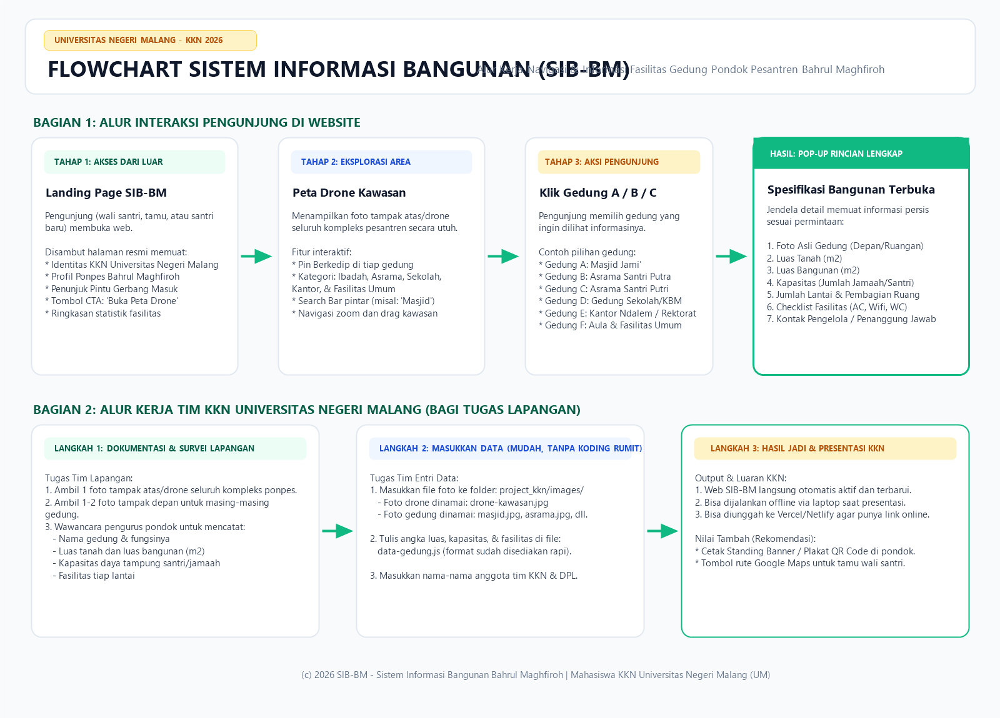

Diagram alur interaksi pengguna & pembagian tugas survei lapangan Pondok Pesantren Bahrul Maghfiroh

💡 Tips: Kamu juga bisa klik kanan gambar di atas lalu pilih "Save image as... / Simpan gambar sebagai..." untuk menyimpannya ke HP atau laptopmu.
images/ dan file data-gedung.js tanpa perlu koding yang rumit.